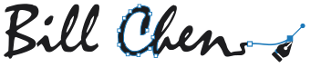
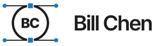
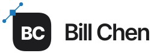

Logo options: drawn as vectors
Your name drawn the way you would build it in Figma or Illustrator, with anchors, handles, selection boxes and the pen tool. Each card shows the logo on light and dark, in a header, and the favicon at tab and home screen sizes.
V1Your signature, in edit mode
The lettering from your existing logo traced as a live vector: the C shows its anchors, and the mouse is gone, the tail now runs to a pen nib on a selected anchor.


V2Selected text object
The text caret face, Inter Tight SemiBold, selected like a layer in Figma: bounding box, corner handles, and the C open for editing with its handles pulled out.
V2bSelected text object, BC favicon
V2 with a BC favicon: the two letters in Inter Tight Bold, selected as one text layer with a blue box and square corner handles. Built to stay legible at 16 pixels.
V3One continuous line
bill chen as a single monoline path: every letter hangs off one baseline wire, with nodes where the pen turns and a filled end point.
V4BC drawn in curves
A B and C monogram built from a handful of bezier curves, the C caught mid edit with its handles out, set beside the name.
V5Ring with anchors
A circle path with its top and bottom anchors selected and handles running out to the sides, BC set inside, the name beside.

V6Leaf tile
A tile with one sharp corner, that corner a selected anchor with its handle across it. BC knocks out of the tile.


V7Outline and preview
The name split down the middle: outline mode on the left with its anchors showing, the finished preview on the right.
V8Pen finishing the name
Bill Che is set and the pen tool is still drawing the n, its last anchor selected and the handle being dragged out.
V2cSelected text object, editing the n
V2 made easier to read: the C is a plain solid letter and the editing moves to the final n, with anchors on its stems and arch and one handle pulled out from the arch.